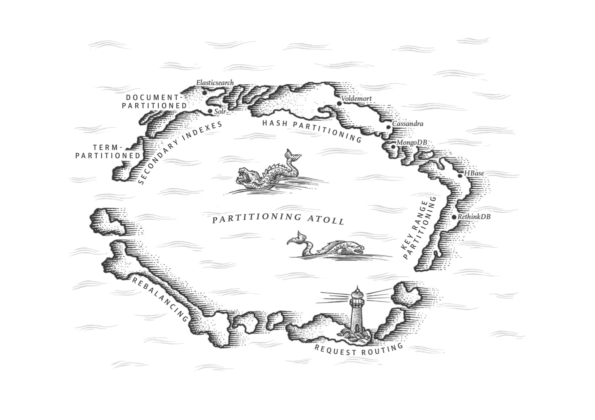

第六章：分区
我们必须摆脱计算机既定的规则不被它限制，我们必须先规划好数据怎么设计、优先级怎么定义，然后梳理关系，最后才是编写代码。 — Grace Murray Hopper, Management and the Computer of the Future (1962)
在第五章我们讨论了备份，在不同的节点上有多个拥有相同数据的备份。但是在大规模的数据集或者有着非常大的查询吞吐量的场景中，只有备份显然是不足够的：我们需要将数据分区，或者叫分片。i
i. Partitioning, as discussed in this chapter, is a way of intentionally breaking a large database down into smaller ones. It has nothing to do with network partitions (netsplits), a type of fault in the network betweennodes. We will discuss such faults in Chapter 8. ↩
通常，分区被定义为每个数据段（每条记录，每一行或每个文档）都只归属于同一个分区。它有各式各样的实现方法，我们会在本章来讨论。实际上，每个分区都是它自己的一个小型数据看，尽管数据库可以支持在同一时间对多个分区同时进行操作。
我们想要把数据分区的最主要原因就是为了实现「可伸缩性」。在一个非共享的集群中，不同的数据可能会分配到不同的节点上（详情参见 第二部分 中对 shared nothing 的定义）。因此，大型数据库一般都会部署在多个磁盘上，这样查询也就会负载到多个处理进程中。
对于在单一分区上的查询操作，每个节点都可以独立的在它所在的分区上完成查询操作，所以，可以通过增加更多的节点来提高查询吞吐量。大型复杂的查询操作也可以把他们看作隐性的并行在不同的节点之上，尽管这看上去会变得复杂一些。